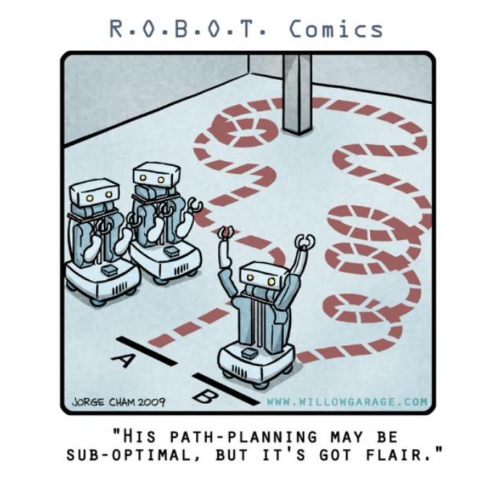
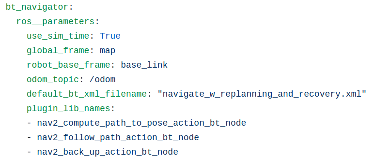

layout: true <div class="header"><img src="https://rosin-project.eu/wp-content/uploads/rosin_ack_logo_wide.png" style="background-color:transparent"/></div> <div class="footer"><img src="https://www.ipa.fraunhofer.de/content/dam/ipa/ipa.svg" /><p>© Fraunhofer IPA</p></div> <div class="triangle"></div> --- class: center, middle name: main_title class: center, middle name: main_title # Navigation using ROS 2 ## Navigation  <!-- --- ## Path Planning <img src="../static/path_to_goal.png" alt="path_to_goal" style="width:600px" class="image-center"/> --> --- ## Navigation 2 - The Simple Process of Navigation --- ## Navigation 2 - Architecture --- ## Navigation 2 - BT Navigator Server Using a Behavior Tree XML as a control flow for navigation * Provided by [nav2_bt_navigator] * Read an XML description of the Behavior Tree * Allows to easily implement behavior to select the behavior of your robot * Communicate with Planners, Controllers and Recovery server * The parameter of **BtNavigator** node:  --- name: two_columns ## Navigation 2 - What is a Behavior Tree ? * A Behavior Tree is a representation of a flow of decision and execution. [BehaviorTreeCpp](https://github.com/BehaviorTree/BehaviorTree.CPP) * Types of nodes: * ControlNodes: have 1 to N children, e.g. SequenceNode, FallbackNode ... * DecoratorNodes: similar to the ControlNode, but can only have a single child. * ActionNodes: leaves and do not have any children. * ConditionNodes are equivalent to ActionNodes, but they should not alter the state of the system. .cols[ .fifty[ Including: SequenceNode, DecoratorNodes, ConditionNode ] .fifty[ Including: FallbackNode,SequenceNode, ConditionNodes ] ] <!-- source: https://www.behaviortree.dev/bt_basics/ --> --- ## Navigation 2 - Navigation Behavior Trees Example: Navigate with recovery --- ## Navigation 2 - Behavior Tree XML format --- ## Navigation 2 - More Examples of Navigation Behavior Tree XML: [nav2_bt_navigator/behavior_trees](https://github.com/ros-planning/navigation2/tree/main/nav2_bt_navigator/behavior_trees) --- ## Navigation 2 - Precondition * Map * AMCL --- ## Navigation 2 - Map Server * [nav2_map_server](https://github.com/ros-planning/navigation2/tree/main/nav2_map_server) * map_server: loading the map, serving a static map on the "/map" topic. * map_saver: saving the map into a file (`ros2 run nav2_map_server map_saver_cli -f my_map`) Step 1: Create a parameter file with the name of the map yaml OR Set the same params in the launch file ```yaml # map_server_params.yaml map_server: ros__parameters: frame_id: map topic_name: map use_sim_time: false yaml_filename: maps/map.yaml ``` Step 2: Run map server with this file passed as a param ```bash ros2 run nav2_map_server map_server --ros-args --params-file map_server_params.yaml ``` Step 3: Transition through configure to active through CLI OR The launch filter ```bash ros2 lifecycle set /map_server configure ros2 lifecycle set /map_server activate (ros2 lifecycle list /map_server) ``` --- ## Navigation 2 - Map Server Example maps/map.yaml: ```yaml image: testmap.png resolution: 0.1 origin: [0.0, 0.0, 0.0] occupied_thresh: 0.65 free_thresh: 0.196 negate: 0 ``` * resolution : Resolution of the map, meters / pixel * origin : The 2-D pose of the lower-left pixel in the map, as (x, y, yaw) * occupied_thresh : Pixels with occupancy probability greater than this threshold are considered completely occupied. * free_thresh : Pixels with occupancy probability less than this threshold are considered completely free. * negate : Whether the white/black free/occupied semantics should be reversed <img src="../static/map.png" alt="Nav2_BT" style="width:100px" class="image-center"/> --- name: two_columns ## Navigation 2 - AMCL (Adaptative Monte Carlo Localization) .cols[ .fifty[ subscribes to: * Laser scans : /scan (sensor_msgs/LaserScan) * (Listen to) transform odom to base_link * Initial pose : /initialpose (geometry_msgs/PoseWithCovarianceStamped) * Map : /map (nav_msgs/OccupancyGrid) ] .fifty[ publishes: * robot’s estimated pose in the map, with covariance: /amcl_pose (geometry_msgs/PoseWithCovarianceStamped) * pose estimates being maintained by the filter: /particlecloud (geometry_msgs/PoseArray) * (Broadcast) the transform map to odom ] ] source: http://wiki.ros.org/amcl --- ## Navigation 2 - AMCL The configuration contain many parameters ([Wiki](http://wiki.ros.org/amcl)). Some important to set: * ~robot_model_type (string, default: ”differential”) * ~odom_frame_id (string, default: ”odom”) * ~base_frame_id (string, default: ”base_link”) * ~global_frame_id (string, default: ”map”) * ~scan_topic (string, default: ”scan ”) * ~min_particles (int, default: 100) * ~max_particles (int, default: 5000) --- ## Navigation 2 - Overview * [Navigation 2](https://github.com/ros-planning/navigation2) is a meta-package that enables a mobile platform to reach a goal. * load, serve, and store maps (**[nav2_map_server]**) * localize the robot on the map (**[nav2_amcl]**) * plan a path from A to B around obstacles (**[nav2_planner]**) * control the robot as it follows the path (**[nav2_controller]**) * convert sensor data into a costmap representation of the world (**[nav2_costmap_2d]**) * build complicated robot behaviors using behavior trees (**[nav2__behavior_trees] and [nav2_bt_navigator]**) * Compute recovery behaviors in case of failure (**[nav2_recoveries]**) * Follow sequential waypoints (**[nav2_waypoint_follower]**) * Manage the lifecycle of the servers (**[nav2_lifecycle_manager]**) * Plugins to enable your own custom algorithms and behaviors (**[nav2_core]**) --- ## Navigation 2 - Planning Overview --- ## Navigation 2 - Planning Overview --- ## Navigation 2 - Plugins **[nav2_core]**: hosts the abstract interface (virtual base classes) for plugins --- ## Navigation 2 - Planning A planner is here to help you find the path that **costs** the least. <img src="../static/Map_cost.png" alt="Map_cost" style="width:400px" class="image-center"/> Cost can be many things (object proximity, duration, backward motion, rotation,...) --- ## Navigation 2 - Costmap [[nav2_costmap_2d]](https://github.com/ros-planning/navigation2/tree/master/nav2_costmap_2d) The costmap computes the cost around obstacles and represents places that are safe and unsafe for the robot. <!-- the red cells represent obstacles in the costmap, the blue cells represent obstacles inflated by the inscribed radius of the robot, the red polygon represents the footprint of the robot. For the robot to avoid collision, the footprint of the robot should never intersect a red cell the center point of the robot should never cross a blue cell. --> --- ## Navigation 2 - Inflatation of obstacles Figure 1: Workspace to Configuration Space transformation (a) Circular Robot & Obstacle in W-Space (b) Transformation based on Robot Footprint (c) Point Robot & Inflated Obstacle in C-Space Figure 2: Obstacle inflation for (a) Point Robot (no inflation) (b) Small Circular Robot (c) Large Circular Robot [Source: Configuration Space, Prof. Jaebyung Park, Chonbuk National University](https://slideplayer.com/slide/4239324/) --- name: two_columns ## Navigation 2 - Costmap Configuration .cols[ .fifty[ Layer Specification: - Static Map Layer: unchanging data from an external source (static map) - Obstacle Layer: tracks the obstacles as read by the sensor data (2D, LaserScan) - Voxel Layer: tracks the obstacles using PointCloud2 (3D) - Inflation Layer: inflates the obstacles to represent the configuration space of the robot ] .fifty[ Can be configured with a yaml file like this one: <!--  --> Found in [nav2_bringup](https://github.com/ros-planning/navigation2/blob/main/nav2_bringup/bringup/params/nav2_params.yaml) ] ] --- ## Navigation 2 - Planner Server Planner Server [[nav2_planner]](https://github.com/ros-planning/navigation2/tree/foxy-devel/nav2_planner): Try to find a **global** plan to the goal. The default is the [nav2_navfn_planner](https://github.com/ros-planning/navigation2/tree/foxy-devel/nav2_navfn_planner): * support 2 search algorithms: * Dijkstra: find the shortest path * A*: use a heuristic to guide itself, but is not guaranteed to find the shortest path * Use the global costmap (still updated by robot sensor) Publish a plan on: **~<name>/plan** (nav2_msgs/Path) <img src="../static/dijkstra.png" alt="dijkstra" style="width:200px" class="image-left"/> <img src="../static/a-star.png" alt="dijkstra" style="width:200px" class="image-center"/> source: http://theory.stanford.edu/~amitp/GameProgramming/AStarComparison.html --- ## Navigation 2 - Planner Server Configuration * ~allow_unknown (bool, default: true) <!-- Specifies whether or not to allow the planner to create plans that traverse unknown space. --> * ~tolerance (double, default: 0.0) <!-- tolerance: on the goal point for the planner. The planner will attempt to create a plan that is as close to the specified goal as possible but no further than default_tolerance away. Grid based: create a path that follows the grid boundaries allow_unknown (bool, default: true) Specifies whether or not to allow navfn to create plans that traverse unknown space. --> --- ## Navigation 2 - Controller Overview --- ## Navigation 2 - Controller Overview --- ## Navigation 2 - Plugins --- ## Navigation 2 - Controller Server [[nav2_controller_server]](https://github.com/ros-planning/navigation2/tree/master/nav2_controller_server) * Given: a global plan, a costmap * Need to do: produce velocity commands The default is the [DWB Controller](https://github.com/ros-planning/navigation2/tree/master/nav2_dwb_controller). Publish the velocity on: **~<name>/cmd_vel** (geometry_msgs/Twist) Contains multiples plugins: * Trajectory Generator Plugins * Critic Plugins * Goal Checker Plugins <!-- Dynamic Window Approach --> --- ## Navigation 2 - DWB Controller ### Trajectory Generator Plugins In charge of generating the local trajectory and outputting the command velocity. Currently there is two plugins (only one can be loaded at a time): * StandardTrajectoryGenerator * LimitedAccelGenerator --- ## Navigation 2 - DWB Controller ### Critic Plugins Scores the trajectory generated by the trajectory generator. Multiple plugins can be loaded and will added their score to the final score of each trajectory. Examples: * BaseObstacle: based on where the path passes over the costmap <!-- Scores a trajectory based on where the path passes over the costmap. --> * ObstacleFootprint: based on verifying all points along the robot's footprint don't touch an obstacle marked in the costmap. <!-- Scores a trajectory based on verifying all points along the robot's footprint don't touch an obstacle marked in the costmap. --> * GoalDist: based on how close the trajectory gets the robot to the goal pose. <!-- Scores a trajectory based on how close the trajectory gets the robot to the goal pose. --> * ... [List and description](https://github.com/ros-planning/navigation2/tree/master/nav2_dwb_controller) --- ## Navigation 2 - DWB Controller ### Goal Checker Verify if the robot has reach its goal Currently there is two plugins (only one can be loaded at a time): * SimpleGoalChecker - Check the position to see if the robot has reached the goal. * StoppedGoalChecker - Check the position and that the robot has stopped. You can parametrize the goal "range" (position, rotation, etc...). ```yaml goal_checker: plugin: "nav2_controller::SimpleGoalChecker" xy_goal_tolerance: 0.25 yaw_goal_tolerance: 0.25 stateful: True ``` --- ## Navigation 2 - Recovery Overview --- ## Navigation 2 - Recovery Overview --- ## Navigation 2 - Plugins --- ## Navigation 2 - Recovery Server Define the recovery actions that the robot can perform. [[nav2_costmap_2d]](https://github.com/ros-planning/navigation2/tree/master/nav2_costmap_2d) * Clear the costmaps [[nav2_recoveries]](https://github.com/ros-planning/navigation2/tree/master/nav2_recoveries) * Spin - Rotate in-place by a given angle * Back Up - Linear translation by a given distance * Stop - Stop the robot --- ## Navigation 2 - Life Cycle Manager The nodes within NAV2 are managed by the LifeCycle Manager of ROS 2 (see Basic Slides). --- ## Navigation 2 - Goals Source: Matt Hansen talk at ROS-I Conference 2019 The goal of Navigation 2 are: * Customizable - logic ability to customize behavior, less need to fork the code * Modularity - to more easily replace planners and control algorithms * Extensibility - to use Python or other languages to write planners and control Increase quality using: * Reliability - the system should be able to perform in a consistent way * Quality - the code submitted should be validated before merging * Maintainability - the workflow should prevent regressions in the above --- ## Navigation 2 - Recap - Many nodes are running for navigation, all are importants. - Is plugin based, if you have your own planner, you can use it as a plugin - Lot of parameters (you can use dynamic reconfigure for some of them) - Be always carefull of your naming (topics, TFs). - Use the Behavior Tree XML to orchestrate your navigation operation --- ## Navigation 2 - Thanks --- ## Navigation 2 - Questions ?